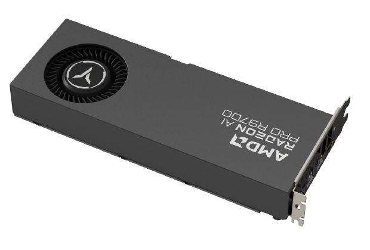
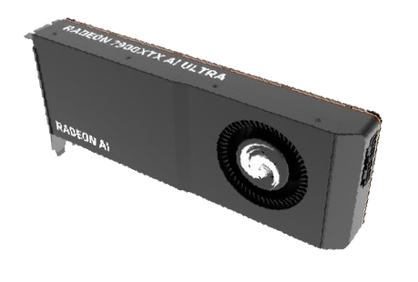

盈通 R9700 32 GB
35B Q4 办公 Agent 首选样机
32 GB 可容纳整份 35B Q4 权重，并给长文档的缓存留出更多余量。配对实测生成 127.4 token/s。经常读长文档可看 5090，主要跑 7B 或用 Blender 可先看 5070 Ti。
¥17,899 京东优惠快照
读 R9700 专项
AMD Radeon NVIDIA GeForce / RTX PRO
从 Qwen 本地推理、长文档、生图与渲染到游戏和采购。按实际任务选卡，也可逐型号核对规格、跑分和中美价格。
35B Q4 办公 Agent 首选样机
32 GB 可容纳整份 35B Q4 权重，并给长文档的缓存留出更多余量。配对实测生成 127.4 token/s。经常读长文档可看 5090，主要跑 7B 或用 Blender 可先看 5070 Ti。
¥17,899 京东优惠快照
读 R9700 专项
70B Q4 或大生图工作流，再考虑 48 GB
70B Q4 样本仅权重就约 39.6 GiB。48 GB 的优势是装下更大的模型和上下文，先用样卡验证目标流程、驱动和稳定性。
二手约 ¥20,000 · 新品约 ¥30,000 W7900 预算参照
读 7900 专项
127.4 / 194.0token/s
Qwen3.5 35B Q4 同权重生成。R9700 32 GB 可整份驻留，原版 5090 生成约快 52%。
查 Qwen 实测和估算 →1,877 / 6,461token/s
R9700 / 原版 5090 的 Qwen 35B 32K 输入处理。预填充差距比生成更大。
看同权重实测 →11.2 / 18.7秒 / 张
RTX 5070 Ti / RX 9070 XT 的 SDXL 样本。渲染另看 Blender，重型场景先核显存。
查生图和 Blender →55.5 / 66.2光追 FPS
RX 9070 XT / RTX 5070 Ti 的光栅均约 117 FPS，光追测试中差距更大。
查光栅与光追 →先看 35B 生成速度，再比显存、功耗与大陆价格。
| 型号 | 推理速度 | 板卡规格 | 价格与评分 | |||||
|---|---|---|---|---|---|---|---|---|
| Qwen 35B Q4 生成token/s | Llama 2 7B 生成token/s | 显存GB | 显存带宽GB/s | FP32TFLOPS | 功耗W | 大陆价格 / 预算元 | 规格分/10 | |
| Radeon AI PRO R9700AMD | 127.4配对实测 | 152.7Vulkan 实测 | 32 | 640 | 47.8 | 300 | 17,899此前优惠 | 8 |
| RTX 5070 TiNVIDIA | 153推测解码实测 | 176.2Vulkan 实测 | 16 | 896 | 43.9 | 300 | 7,102–9,240渠道 | 6 |
| RTX 5090 原版NVIDIA | 194.0配对实测 | 245.5MLPerf 实测 | 32 | 1,792 | 104.8 | 575 | 51,000双宽涡轮 | 8 |
| RTX 5090 D 首版NVIDIA | 约 195估算依据 | 248.2MLPerf 实测 | 32 | 1,792 | 约 105估 | 575 | 47,199–49,499京东卡片 | 8 |
| RTX 5090 D v2NVIDIA | 145–170估算依据 | 214.9MLPerf 实测 | 24 | 1,344 | 约 105估 | 575 | 41,699–48,599京东卡片 | 6 |
| RX 7900 XTX AI ULTRA 48 GBAMD · 供方规格 | 约 95估算依据 | 约 170估算依据 | 48 | 864 | 61 | 约 295 | 20,000–30,000W7900 预算参照 | 9 |
| RX 7900 XTX 标准版 24 GBAMD | 104.79独立实测 | 190.9Vulkan 实测 | 24 | 960 | 61.4 | 355 | 7,899此前跟踪 | 6 |
5090 原版的 35B Q4 生成是 R9700 的 1.52 倍，32K 预填充是 3.44 倍。
与 5070 Ti 的 Steel Nomad 得分接近，Blender 样本为 3,726 对 7,882。
7B 来自 Llama 2 的 MLPerf 或 Vulkan 样本。35B 的配对实测使用相同权重，其余实测的模型、引擎或量化有差异。标有「估算依据」的数字来自实测与规格外推。规格分按显存、带宽与功耗计算，价格为 11 月 20 日汇总。 查看生成速度的测试条件与出处。
查看 R9700 实测与评分口径| 型号 | 推理速度 | 板卡规格 | 价格与评分 | |||||
|---|---|---|---|---|---|---|---|---|
| Qwen 35B Q4 生成token/s | Llama 2 7B 生成token/s | 显存GB | 显存带宽GB/s | FP32TFLOPS | 功耗W | 大陆价格 / 预算元 | 规格分/10 | |
| RX 7900 XTX AI ULTRA 48 GBAMD · 供方规格 | 约 95估算依据 | 约 170估算依据 | 48 | 864 | 61 | 约 295 | 20,000–30,000W7900 预算参照 | 9 |
| Radeon AI PRO R9700AMD | 127.4配对实测 | 152.7Vulkan 实测 | 32 | 640 | 47.8 | 300 | 17,899此前优惠 | 8 |
| RTX 5070 TiNVIDIA | 153推测解码实测 | 176.2Vulkan 实测 | 16 | 896 | 43.9 | 300 | 7,102–9,240渠道 | 6 |
| RTX 5090 原版NVIDIA | 194.0配对实测 | 245.5MLPerf 实测 | 32 | 1,792 | 104.8 | 575 | 51,000双宽涡轮 | 8 |
| RTX 5090 D 首版NVIDIA | 约 195估算依据 | 248.2MLPerf 实测 | 32 | 1,792 | 约 105估 | 575 | 47,199–49,499京东卡片 | 8 |
| RTX 5090 D v2NVIDIA | 145–170估算依据 | 214.9MLPerf 实测 | 24 | 1,344 | 约 105估 | 575 | 41,699–48,599京东卡片 | 6 |
| RX 7900 XTX 标准版 24 GBAMD | 104.79独立实测 | 190.9Vulkan 实测 | 24 | 960 | 61.4 | 355 | 7,899此前跟踪 | 6 |
48 GB 比 R9700 多 16 GB，可验证 70B Q4、较大生图流程和多模型驻留。
48 GB 版的速度按 24 GB 标准版和带宽外推，预算参考 W7900 二手约 2 万、新品约 3 万元。
7B 来自 Llama 2 的 MLPerf 或 Vulkan 样本。35B 的配对实测使用相同权重，其余实测的模型、引擎或量化有差异。标有「估算依据」的数字来自实测与规格外推。规格分按显存、带宽与功耗计算，价格为 11 月 20 日汇总。 查看生成速度的测试条件与出处。
查看 7900 规格与验收条件共 275 条型号与版本。点型号看细项与出处，勾选最多三款对比。
横向滑动查看其余指标。
规格和型号复核于 2026 年 11 月 20 日。产品或规格表匹配 148 条，系列匹配，变体另核 29 条，板卡规格书 1 条，公开设备名匹配 96 条，渠道商品匹配 1 条。
已匹配 Blender 4.5.0 Windows GPU 渲染 130 条，Qwen 35B 数据 10 条。同一驱动名共用于多个显存变体时，保留系列证据。价格以对应商品及采集日期为准。
AMD ROCm 规格 · libdrm 设备目录 · NVIDIA 公开驱动设备 · NVIDIA 规格对比 · NVIDIA 工作站规格 · NVIDIA vGPU 规格 · Blender Open Data 4.5.0 · Qwen 与 7B 原始记录
阅读原始规格与价格记录 →